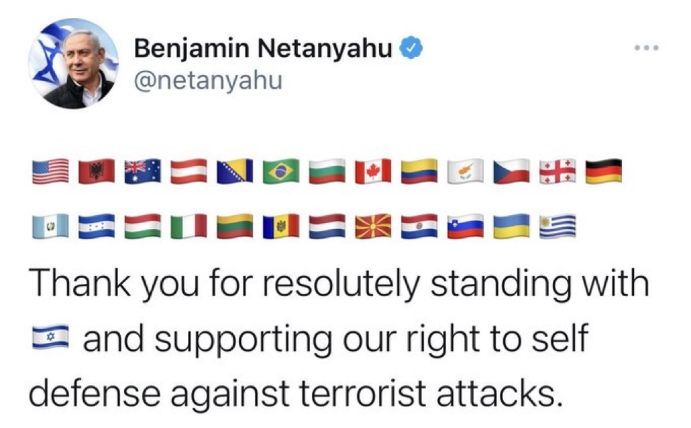

2021 Israeli-Palestinian Crisis is the latest manifestation of Israel’s unilateral policies that is now characterized as an apartheid regime. Years of chronic conflict, repression, and injustices culminated into the total marginalization of Palestinian people, absolute lack of respect for their self-determination right, and near-complete occupation of their homeland by militaristic and settlement campaigns. Palestine, especially, Gaza has become District 9. There are thousands of articles, blogs, and opinion pieces about the latest escalation following Israeli Supreme court’s decision to evict four Palestinian families from Sheikh Jarrah neighborhood in East Jerusalem. The rest is, unfortunately, a familiar story of disproportional use of force by Israel, killing of civilians, grave injustices, and urban violence amid a new Intifada, rising extremism of radical Jewish groups, and indifference of international community to the unfolding drama. I am not an expert on Israeli politics nor I study the chronic conflict in this part of the world. So, I will refer the readers to thousands of pieces written by scholars and and pundits about the subject (I am refraining to endorse any). In this post, I would like to provide some data and insights about Israel’s long-term policy of gaining official recognition. My main argument is this: official recognition is not simply a symbolic, diplomatic act. Rather it comes with significant perks, including lucrative trade relations, security benefits, and creation of a parallel universe of legitimacy justifying acts of State of Israel despite grave injustices, human rights violations, and war crimes. Let me start with this twitter post by Benjamin Netanyahu highlighting the official support Israel enjoys (tweet intentionally not embedded!!!).

Most of these countries whose flags are shown on this tweet recognize Israel but not Palestine. Here is your first perk of official recognition game. Call on or cite the countries that recognize Israel but not Palestine in your public messages to create a false legitimacy in a parallel universe. The people of the countries whose flags are listed in this tweet do not necessarily endorse their government’s position as there is generally a good deal of support for Palestinian independence. For example, in the latest escalation, significant protests took place in London, New York, Chicago, and even Tel Aviv against violence carried by the state of Israel. Yet, I don’t think the respective governments or Netanyahu cares about these protests. The state of Israel was created on 14 May 1948 and quickly recognized by some Western countries. Over time, this recognition expanded as this map shows (I used rworldmap package by Andy South to produce these maps):
The tabular data for this map can be downloaded from this Wikipedia Page. I have double checked the data entries for a random sample of countries against other sources and the data are pretty accurate. Clearly, Israel played this game very well since its official declaration of independence in 1948. Not only a majority of countries officially recognize it, but also, Israel managed to gain recognition of some countries in the Muslim world including Turkey, Egypt, and Central Asian countries. Israel managed to put a few dents in the opposing bloc by engaging in non-formal relations with some countries in the Arab and Muslim geography. For example, some sub-Saharan countries and recently countries like UAE and Bahrain. This is a huge gain for Israel as for a long time, the Arab League refused to recognize Israel as a bloc. This is totally against the will of the majorities in these countries as the Arab Barometer data tell us that citizens in the Arab League are not favorable toward Israel. It is likely that more official recognition will expand the parallel universe of false legitimacy and improved trade relations will follow as a tangible benefit. Let’s compare this with the Palestinian case (again the data are from Wikipedia).

Now, at first sight, the picture does not look bad at all for Palestine. But the “green” can be deceiving when we consider the disproportionate power, capabilities, and wealth enjoyed by the countries depicted with “yellow”, or simply the West. We might be looking at a “West and the rest” situation here. The influence of the “non-recognizer” in World affairs far outweighs that of “recognizers.” It is the West, particularly the US and to an increasing degree the EU, that have the real power to check Israel or to grant statehood to Palestine. This fact gives Israel a significant advantage in curtailing Palestinians’ ambitions and expanding their own sphere of influence. While Israel can obtain some benefits by engaging with countries that do not recognize Israel but maintain some type of informal relations (“yellow” in the first map), the same cannot be said for Palestine (“yellow” in the second map) given military and economic interdependence favoring the West and Israel.
As I stated above, politics of official recognition combined with the Western support helps Israel to realize tangible benefits beyond diplomacy and creation of a parallel universe of false legitimacy. Israel managed to improve its military and economic ties with many countries to create interdependence to its advantage. Some of these ties involve countries which can be seen as gate-keepers such as Turkey, Egypt, and Saudi Arabia (the situation with the last one is still evolving). So, let’s take a look at Israel’s top trade partners according to the World Bank’s World’s Integrated Trade Solution or WITS Data.

I like this chart, because it shows the extent and magnitude of trade with Israel’s top trade partners. The size of the bubble shows the weight of a partner’s share within total Israeli trade volume. Without hesitation, the biggest bubbles belong to the Western countries, including US, UK, Netherlands, Germany, and Italy. In the non-Western camp, we see China (and also Hong-Kong), Singapore, and Japan as notable trade partners. While there is an obvious correlation between the total wealth of these countries and trade weight within total trade of Israel, this figure still tells us quite a bit about the success of Israel in creating interdependencies and embedding its international relations with these countries within them. Some of these countries occasionally voice support for Palestinian cause (mostly crocodile tears), but their economic interests lie elsewhere. This may explain the inaction by these actors in each and every crisis, the silence against the human rights violations and war crimes, and finally the bombing of UN buildings or press offices (see the image above for the bombing of the building housing AP and Al-Jazeera offices).
The case of Turkey is interesting. Turkey’s total weight in Israeli total trade volume is not formidable, the last or ranked #17 on the chart. However, it has symbolic and political significance. First, Erdogan has appeared as a staunch defender of Palestinian cause and he made Palestine a significant element of Turkish foreign policy (see my book chapter on this subject 👉 Here. Second, the Islamist leanings of AKP and Turkey’s Muslim-majority status makes it an outlier in the Muslim World as one of the first countries recognizing Israel and engaging in significant trade relations. The mismatch between Turkey’s harsh rhetoric against Israel and its vested interests in trade partnership with Israel constitutes a curious case. Is Turkey, like the Western countries, shedding crocodile tears? What role does economic interdependence play in Turkish-Israeli relations? I am not entirely sure about the answer as we have seen a deep crisis in bilateral relations after the “one-minute-crisis.” However, in the current juncture, I can provide one insight. Check the figure below using IMF Direction of Trade Data:

The chart shows the balance of trade from the Turkish side (Export-Import) in relation to UAE and Israel. There have been some significant developments in Turkey’s relations with both Israel and UAE in the post-2013 period. After the Mavi Marmara or otherwise known as Gaza Flotilla incident (2010) where Israeli security forces stormed a boat carrying humanitarian aid to Gaza killing ten activists (mostly Turkish citizens), Turkish-Israeli relations broke. Turkey pressed in international and bi-lateral platforms for punishment of and compensation from Israel. After several years of tense relations, with the mediation of the US, the relations were mended when Israel offered $20 million in compensation and an official apology. Turkish-Israeli trade relations boomed starting in 2014 as seen in the chart and the trade balance has been favorable to Turkey. So, Turkey increasingly became invested in this economic interdependence. Well, I am sure you will say interdependence does not mean dependence to warrant Turkey’s consequential inaction in case of crisis in Palestine. This would make sense if Turkey did not have other troubles. After the civil wars of the Arab Spring broke out, Turkey found itself as a warrior rather than a soft power in the Middle East. Its military campaigns involved troop deployments, training of militias, and hiring of mercenaries in Syria and Libya. Furthermore, Turkey emerged as a defender of Islamist parties and made clear its ambitions as a “model” to intervene in the domestic politics of a number of countries including Egypt. Finally, Turkey had to deal with significant economic problems including unemployment, inflation, and the unstoppable decline of Turkish Lira (a number of domestic political issues completes this picture, but I am not dealing with these here). Turkey’s increased engagement in the Middle East and its support for Islamist parties introduced significant tensions between Turkey and the Gulf countries like UAE and Saudi Arabia. These countries have different ambitions in Egypt, Libya, and Syria. For example, Turkish support for Islamist Muslim Brothers was seen as a threat by the rulers of Saudi Arabia and UAE who view the Islamist parties and their courting with the idea of popular sovereignty as a threat to their regimes, which are based on a medieval ruler-ulama alliance helping the authoritarian regime survival. Erdogan’s ambitions to become a leader in the Muslim world and his direct appeal to citizens in these countries added fuel to fire. The political and economic relations between Turkey and Gulf countries deteriorated (save Qatar). As the above chart shows, trade suffered greatly. The green line indicates that in the post-2017 period, Turkey’s balance trade went to the bottom with the UAE. Compare this with the red line and consider the diverging pattern. Israel, is now one of the most formidable trade partners for Turkey because Turkey’s trade balance suffered greatly with other Middle Eastern countries. In conclusion, based on these figures, this is the insight I can offer: In the latest escalation between Palestine-Israel, Turkey’s harsh talk might be more about empty rhetoric and less about action given the economic interdependence formed between Turkey and Israel. Unless Turkey risks losing an important trade partner, -which is unlikely given Turkey’s economic woes-, Erdogan’s most viable path is to condemn Israel for a domestic audience and try to lead an international effort against Israel. The latter will fail becuase the West is unlikely to be part of this effort. Who knows, may be Turkey’s actions increasingly resemble the “West” when it comes to Israeli-Palestiniana conflict.
https://storage.googleapis.com/afs-prod/media/8fdc47e0d2694c06b5e7ac2f29fbed43/800.jpeg
{kind=link}